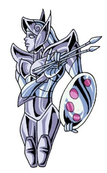
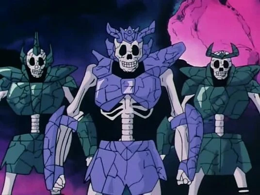
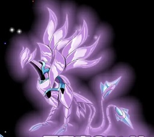

Sobre esta página
Esta página apresenta armaduras esquecidas da obra Saint Seiya, organizadas por tipo de constelação. Cada uma possui sua própria página com informações, imagens e links para sites relacionados. O conteúdo foi estruturado como uma seleção pessoal de favoritos, divididos por categoria dentro do universo do anime.
💡 Clique nas imagens abaixo para acessar a página completa de cada armadura.
Índio
 Clique na imagem para mais detalhes
Clique na imagem para mais detalhes
👆 Clique na imagem acima para abrir a página da armadura
Pintor

Clique na imagem para mais detalhes👆 Clique na imagem acima para abrir a página da armadura

Única aparição: esqueleto guardando Jamir
Patente
Bronze
Aparição
Infelizmente a única aparição foi como esqueleto morto protegendo Jamir.
Poderes
Ver poderes
Apus

Clique na imagem para mais detalhes👆 Clique na imagem acima para abrir a página da armadura
💬 Comentários